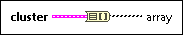

Cluster To Array Function
Owning Palette: Cluster, Class, & Variant VIs and Functions
Requires: Base Development System
Converts a cluster of elements of the same data type to a 1D array of elements of the same data type.

 Add to the block diagram Add to the block diagram |
 Find on the palette Find on the palette |